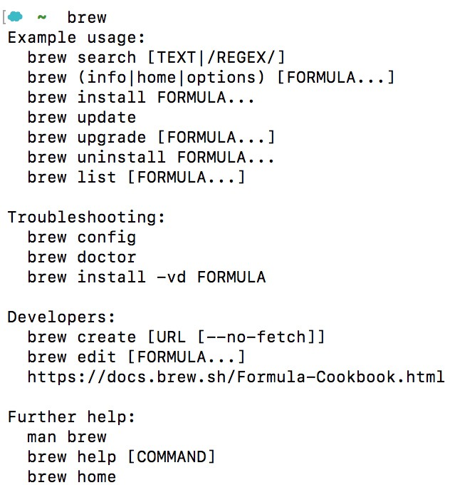
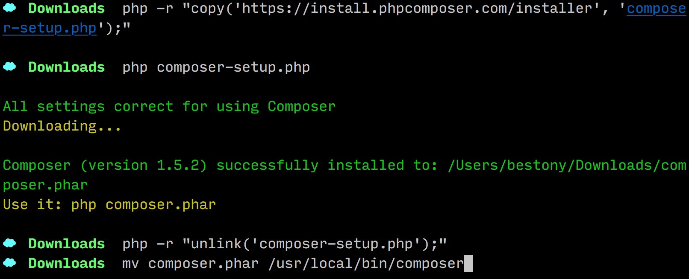
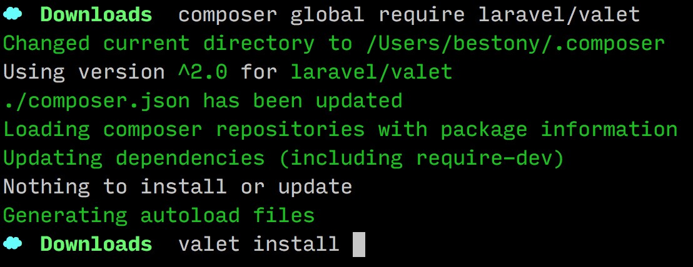
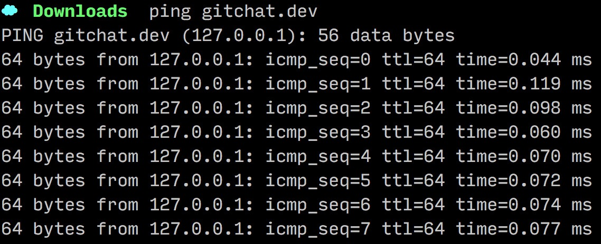
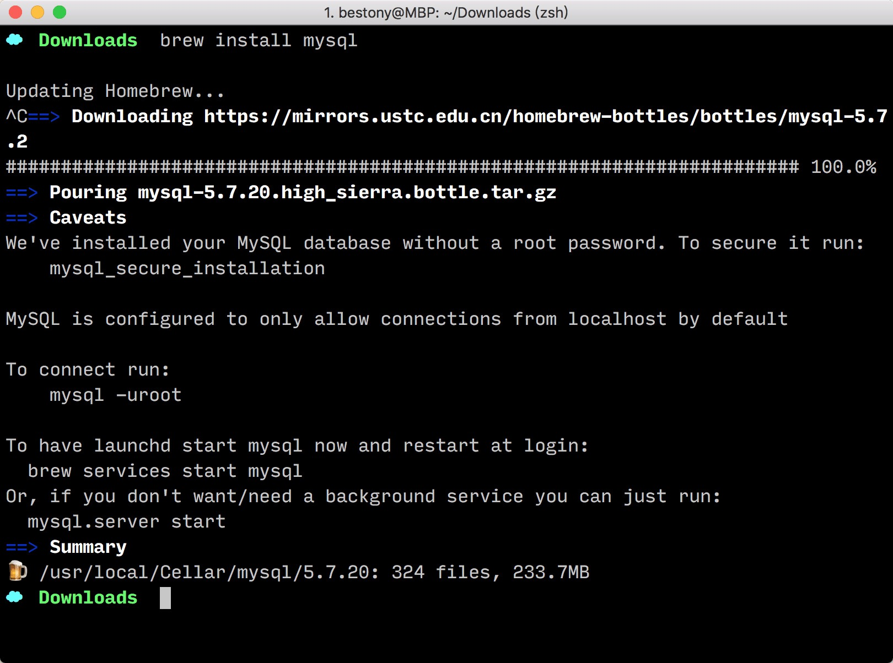
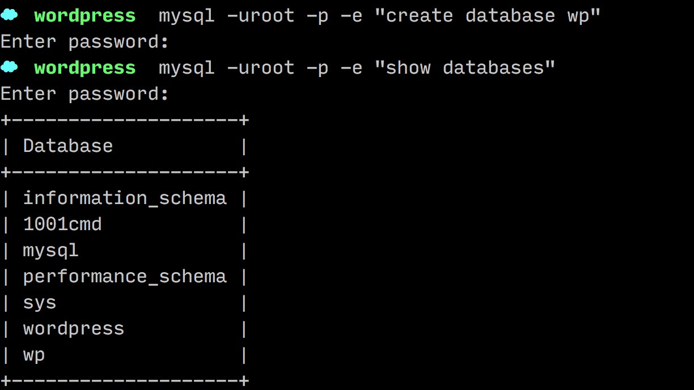
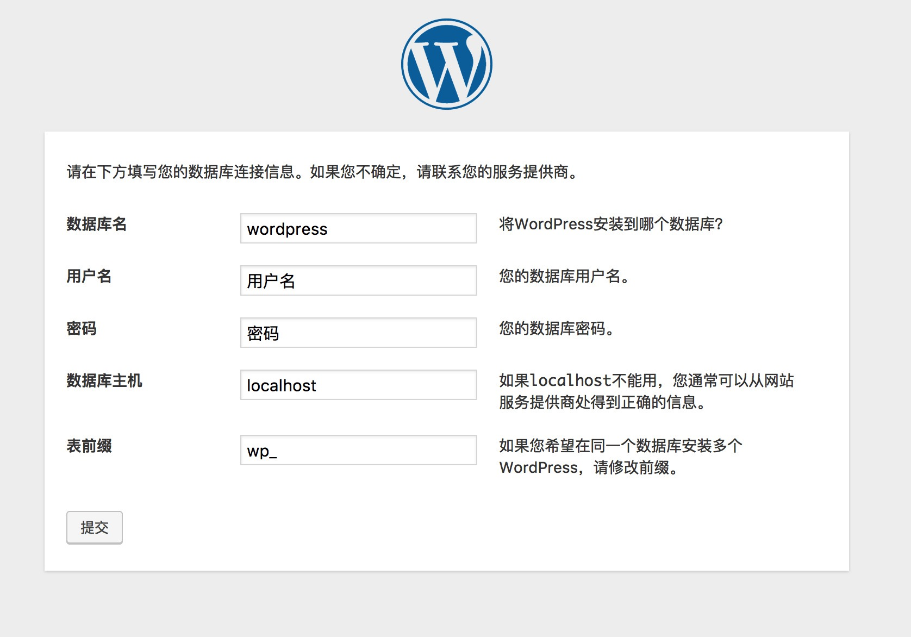
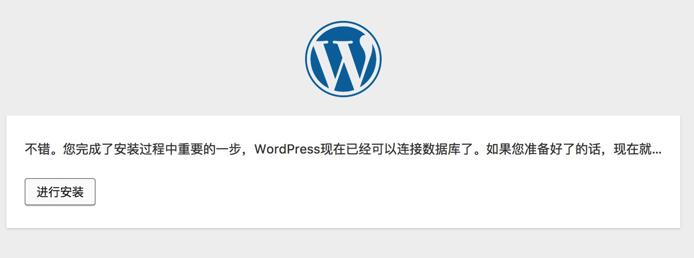
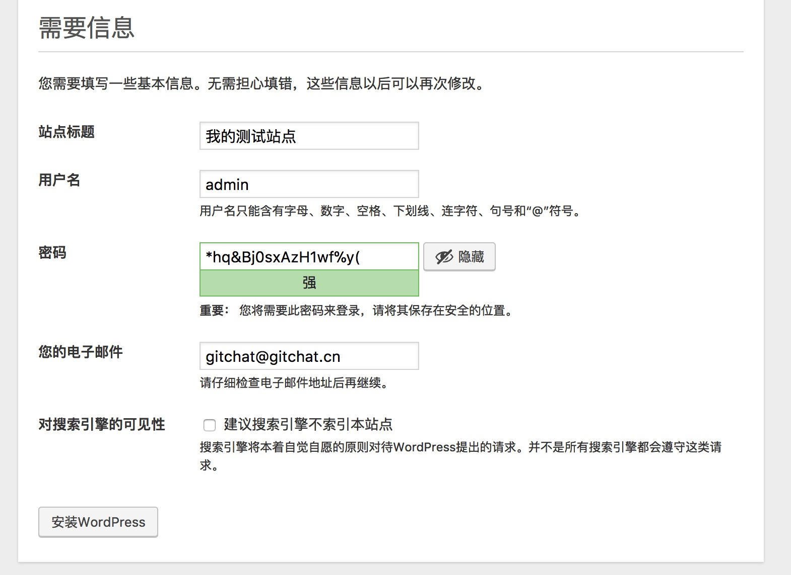

macOS 下的开发环境配置
在本地的 Mac 电脑上配置开发环境
MacOS 相比于 Windows 有很好的命令行支持，在开发环境上也更友好，系统自带运行 WordPress 需要的 PHP 和 Apache。
不过，为了能够更简单的进行 WordPress 开发，建议读者使用 Laravel 的 Valet 组件来进行 WordPress 开发。
安装 homeBrew
Valet 需要 PHP 7 环境和 composer 来运行，同时还需要 homebrew 来安装依赖环境（Nginx、Ngrok、Dnsmasq）。而 PHP 7 和 composer 环境也可以通过 homeBrew 来安装，所以在开始先来安装 homeBrew.
打开 LaunchPad，找到 终端 应用，在终端应用中粘贴如下命令，并回车。
/usr/bin/ruby -e "$(curl -fsSL https://raw.githubusercontent.com/Homebrew/install/master/install)"
homeBrew 的安装需要 XCode Command Line 的支持，可以通过执行
xcode-select --install来安装。
待命令执行完毕后，HomeBrew 就安装完成了。可以执行brew命令，查看系统返回，如果显示如下所示，则说明安装完成了。

安装 PHP 7 和 Composer
在终端内执行如下命令，来安装 PHP 7 执行环境：
brew install php@7.1 # 安装 php71
当 PHP 7 安装完成后，我们开始安装 Composer，在命令行中执行如下命令：
php -r "copy('https://install.phpcomposer.com/installer', 'composer-setup.php');"
php composer-setup.php
php -r "unlink('composer-setup.php');"
mv composer.phar /usr/local/bin/composer
通过上述的命令，把 Composer 安装到本地目录了。
将其移动到
/usr/local/bin/composer主要是为了方便全局运行，这样我们就不用总是使用相对路径来调用 Composer 了。

安装完成后，我们要为 Composer 来配置国内镜像（受不可抗力因素影响，官方镜像下载速度缓慢）。
Composer 支持项目加速和全局加速，我们这里没有 Composer 项目，所以选择全局加速。在命令行中执行如下命令：
composer config -g repo.packagist composer https://packagist.phpcomposer.com
安装 Valet
在命令行中执行如下命令来安装 Valet：
composer global require laravel/valet
valet install
命令执行完成后，系统就成功帮助我们安装了 Valet 开发环境。

这时执行 ping gitchat.dev，可以看到返回的 IP 地址是 127.0.0.1，则说明环境配置成功。

配置 Valet
安装完 Valet，我们还要进行简单的配置，来更好的使用。
首先，来创建网站文件的目录：
mkdir -p ~/Developer/php #创建目录
然后，将这个目录设置为 Valet 的主目录：
cd ~/Developer/php # 进入目录
valet park #配置 Valet
这样，在 PHP 目录下创建的任何一个文件夹，都可以通过 [文件夹名].dev 的域名进行访问。
安装 MySQL
WordPress 需要 MySQL 作为数据库，接下来我们来安装数据库。
brew install mysql
安装完成后，可以执行 brew services start mysql设置数据库的开机自启动。

可以执行cat ~/.mysql_secret来获取 mysql 默认的 root 用户的密码。这个密码稍后要用到，要记下来。
如果提示为
No such file or directory，则说明 root 密码为空。
安装 WordPress
接下来，我们来安装 WordPress。
首先，创建目录，并下载 WordPress 的文件。
cd ~/Developer/php # 进入目标目录
mkdir wordpress # 创建新的文件夹
cd wordpress # 进入新的文件夹
wget https://wordpress.org/latest.zip
unzip latest.zip
mv wordpress/* ./
然后创建数据库：
mysql -uroot -p -e "create database wordpress"
执行命令后，可能会让你输入密码，输入密码后并回车，就成功创建了数据库了。

在浏览器中打开 http://wordpress.dev/，就可以一步一步按部就班的安装了。

在输入数据库信息时，设置数据库名为 wordpress，用户名为root ，密码为上方我们获取到的密码。其他两项不同，单击“提交”按钮。

单击“进行安装”按钮，在新的页面中设置基本信息，并单击“安装 WordPress”按钮。

这样，我们的本地开发环境就部署完成了。